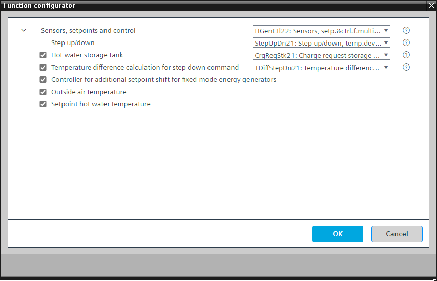

[HGenCtl22] 多个热发生器的传感器、设定点和控制
Program block, name / node subtype: [HGenCtl22] Sensors, setpoints and control for multiple heat generators
Library hierarchy: Heating equipment
Family: HGenCtl
项目树 | 图表 |
|---|---|
|
|
|


Configurator


程序块存储在没有 I/Os. 的库中 使用auto-create and auto-connect函数创建 I/Os 和 /or 将它们连接到接口块，例如 R_A、CMD_B。或者，从包含库中预定义 I/Os 的文件夹中取出 I/Os，并从工厂中取出 /or，并将它们连接到接口块。
对热水流温度进行温度控制。
如果该功能已开启（供热发电厂处于“开启”状态）并且必须对可选储罐进行充电，则发电厂中的“功率控制和补偿”逻辑将被激活，并准备好接收更多或更少电力的需求。
热水流量温度控制细节：将流量和回水温度传感器的最大值与设定值（模拟配置值）进行比较。如果偏差超出容许范围，则会生成需要更多或更少功率（“升压”或“降压”）的信号 (StepUpDn21)。
热水温度控制的设定点增加由模拟配置值定义的小偏移，并且稍高的热水温度设定点被发送到能量发生器。
即使对于具有级（2 级或 8 级）的单个能量发生器也可使用此功能。
该程序块具有以下可选功能：
Option: Hot water storage tank
控制热水储罐的充电状态（有 4 个温度）(CrgReqStk21)。
Option: Temperature difference calculation for step-down command
如果主温差（主流温度 – 主回水温度）太小并低于某个设定点 (TDiffStepDn21)，则为功率控制和补偿逻辑生成降压请求。
Option: Controller for additional setpoint shift for fixed-mode energy generators
“固定”运行模式适用于带有自己的（外部）控制单元且仅接收设定值的发电机。在配置文件表中，操作模式“固定”出现在操作模式“打开”之后。它确保一个能量发生器保持其标称功率，并且稍后打开的另一能量发生器进行调节以保持主流温度。
PID 控制器将主流温度与其设定值进行比较，如果存在偏差，则增加其输出（以％为单位）。能量发生器读取该信号并增加具有“固定”操作模式的能量发生器的本地设定值。这使发电机保持在其标称功率并防止调制。
Option: Outside air temperature (1xAI)
创建外部空气温度的模拟输入并读取其信号。
Option: Setpoint hot water temperature
当没有从整个供应链的消费者收集热水功能的请求或仅收集二进制请求时可以使用的配置值。
姓名 | 描述 | 类型 | 报警/通知类 | 趋势/类型 | |
|---|---|---|---|---|---|
TMnFlCns | Main flow temperature consumer side | AI：模拟输入 | No | 是的，2 | |
TMnRtGen | Main return temperature generation side | AI：模拟输入 | No | 是的，2 | |
PrSpTMnFl | Present setpoint for main flow temperature | ACalcVal: Analog calculated value | No | No | |
DiffSpTEgGen | Temperature difference setpoint for energy generator | ACnfVal: Analog configuration value | N/A | No | |
StepUpDn | Step up/down | N/A | N/A | ||
姓名 | 描述 | 类型 | 报警/通知类 | 趋势/类型 | |
|---|---|---|---|---|---|
|
SpTHw | Setpoint hot water temperature | SpTHw: Setpoint hot water temperature | No | 是的，2 | |
TOa | Outside air temperature | AI：模拟输入 | No | 是的，3 | |
HwStk | Hot water storage tank | [CrgReqStk21] Charge request storage tank, 4 temperature sensors | N/A | N/A | |
TDiffStepDn | Temperature difference for step down | N/A | N/A | ||
SpTShEgGenCtr | Controller for temperature setpoint shift for energy generator | Ctr: Controller | N/A | N/A | |